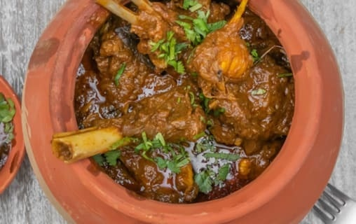

Hundi Mutton
Mutton hundi is a popular dish in North India, particularly in the state of Uttar Pradesh. It is a slow-cooked stew made with mutton, onions, tomatoes, and spices. The dish is typically served with rice or naan.
The history of mutton hundi is not well-documented, but it is believed to have originated in the Mughal era. The Mughals were known for their love of food, and they often experimented with different flavors and ingredients. Mutton hundi is thought to be one of the many dishes that were created during this time.
Mutton hundi is a popular dish for both special occasions and everyday meals. It is a hearty and flavorful dish that is sure to please everyone at the table.
Ingredients:
- 1 kg mutton, cut into chunks
- 2 onions, sliced
- 2 tomatoes, chopped
- 1 green chili, chopped
- 1 ginger garlic paste
- 1 teaspoon turmeric powder
- 1 teaspoon coriander powder
- 1 teaspoon garam masala powder
- 1/2 teaspoon red chili powder
- 1/4 cup curd
- 1/4 cup oil
- Salt to taste
- Cilantro leaves for garnish
Instructions:
- Heat the oil in a large pot over medium heat. Add the onions and cook until golden brown.
- Add the ginger garlic paste and cook for 1 minute more.
- Add the mutton, tomatoes, green chili, turmeric powder, coriander powder, garam masala powder, and red chili powder. Stir to combine.
- Cover the pot and cook for 15 minutes, or until the mutton is tender.
- Stir in the curd and salt. Cook for another 5 minutes, or until the gravy has thickened.
- Garnish with cilantro leaves and serve with hot rice or naan.
Here are some tips for making mutton hundi:
- Use a pressure cooker to tenderize the mutton quickly.
- If you don't have a pressure cooker, cook the mutton in a pot for 30-45 minutes, or until it is tender.
- Add more or less red chili powder depending on your taste.
- You can also add other vegetables to the mutton hundi, such as potatoes, carrots, or green beans.
- Serve the mutton hundi with hot rice, naan, or roti.
Enjoy!